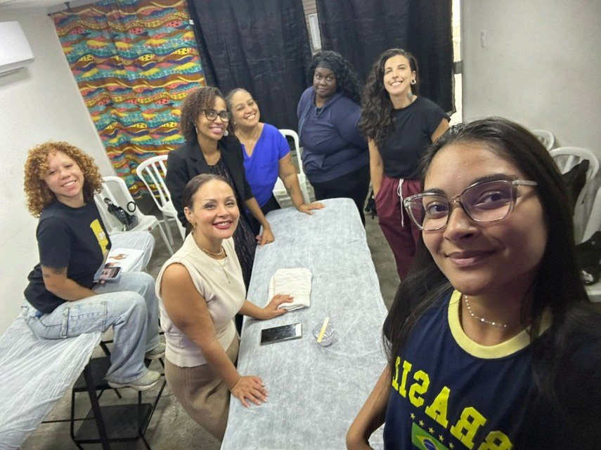
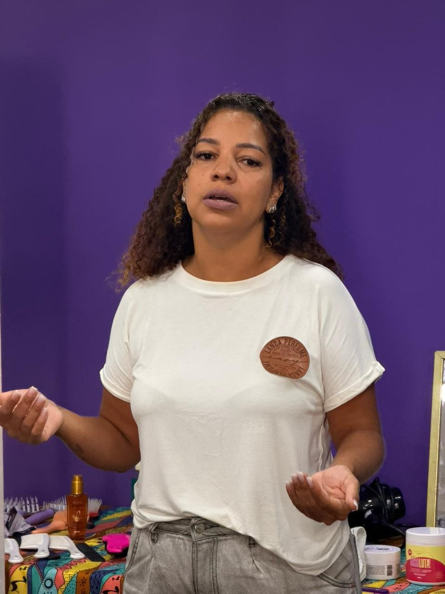
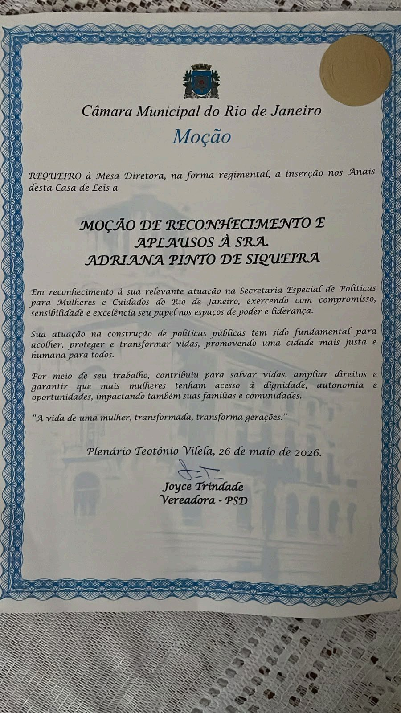

Missão
Contribuir para a redução da desigualdade social nos territórios de favela e para a emancipação social de seus moradores, através de ações socioculturais, desportivas, educacionais e de geração de renda.

Mulheres que acordavam cedo para cuidar da casa, dos filhos e dos netos. Que carregavam talento e nenhuma oportunidade.
Em 2021, no coração da Pequena África, entre a Gamboa, a Providência e os territórios do Centro do Rio de Janeiro, nasceu o Instituto Ayó. Não nasceu de uma grande estrutura. Nasceu da escuta.
Numa pequena sala cedida pela associação de moradores, começamos oferecendo um único curso, extensão de cílios. Oito mulheres se formaram naquela primeira turma. Rapidamente percebemos que ensinar uma técnica era importante e insuficiente. As alunas precisavam de acolhimento e de acreditar novamente em si mesmas.
Foi assim que novos cursos chegaram. E foi quando iniciamos o curso de tranças que entendemos, de fato, qual era a nossa missão. As tranças nos ensinaram que o nosso trabalho ia muito além da qualificação profissional. Elas carregam histórias, preservam memórias e conectam gerações.
O CNPJ foi aberto em 17 de abril de 2023, quando a casa já tinha turma cheia, projeto aprovado em edital público e fila de espera. Em março de 2026, em assembleia, a instituição passou a se chamar Instituto Ayó de Desenvolvimento Social e Cultural, nome que dá conta do que ela virou.
O estatuto aprovado em 24 de março de 2026 define a finalidade da casa em uma frase. Promover o desenvolvimento social, cultural, econômico, educacional e esportivo, com foco em populações em situação de vulnerabilidade, especialmente mulheres cis e trans, crianças, adolescentes e a população negra e periférica.
Contribuir para a redução da desigualdade social nos territórios de favela e para a emancipação social de seus moradores, através de ações socioculturais, desportivas, educacionais e de geração de renda.
Ser ferramenta de transformação social, ressignificando e reestruturando espaços de favela através da educação e da cultura.
Ética, equidade e transparência. No estatuto entram ainda o combate às desigualdades sociais, raciais e de gênero, a valorização da cultura afro-brasileira e a inclusão social e produtiva.
Mulheres negras periféricas, cis e trans, a partir dos 16 anos, incluindo migrantes e refugiadas. Também crianças, adolescentes e jovens dos territórios onde atuamos.
Na Rua Bento Ribeiro, no mesmo quarteirão da sede, funciona a Sala da Mulher Cidadã da Gamboa, equipamento da Secretaria Especial de Políticas e Promoção da Mulher do Rio de Janeiro. É um espaço público de oficinas, rodas de conversa e atividades voltadas à autonomia das mulheres, aberto de segunda a sexta, das 8h às 17h.
O Instituto Ayó trabalha ali dentro. É por isso que o nome das duas aparece junto nas nossas redes e que as instrutoras usam o colete da Mulher Cidadã nas aulas. Quem chega buscando um curso encontra também acolhimento, encaminhamento e a rede de proteção do município na mesma porta.
Essa proximidade é o que permite que uma aluna saia da oficina de trança e entre, no mesmo dia, num atendimento social. Formação e política pública funcionando no mesmo endereço.

Mulher CidadãA Odara é a metodologia própria do Instituto e parte de uma constatação incômoda. Quando a qualificação profissional é isolada do cuidado, do fortalecimento identitário e do acesso real a oportunidade econômica, o resultado é curto e pouco sustentável. Por isso o percurso tem cinco pilares, e nenhum deles funciona sozinho.
Escuta ativa, rodas de apresentação e construção de vínculo. O acolhimento rompe o isolamento social que muitas trazem de casa e é o que sustenta a permanência na turma até o fim.
Rodas de conversa sobre trajetória, sonhos e desafios. A mulher passa a se perceber como sujeito de direitos e agente de transformação, e não como alguém que veio buscar ajuda.
Formação nas áreas da beleza e da economia criativa, junto com precificação, atendimento, organização financeira, divulgação e noções de formalização. Tudo calibrado pela realidade material de quem está na sala.
Encaminhamento para o Studio de Beleza Ayó, para eventos e para atendimentos. É o pilar que fecha a distância entre se formar e gerar renda, distância onde a maioria dos cursos profissionalizantes perde a aluna.
Permanência na rede Ayó, acesso a novos ciclos e possibilidade de atuar como monitora, instrutora ou empreendedora parceira. Impacto sustentável se constrói com processo contínuo, não com ação pontual.
Depois da formatura técnica vêm dez meses de acompanhamento estruturado, divididos em quatro fases, para garantir que o aprendizado vire renda de verdade.
Encontro de ativação profissional, plano individual de geração de renda, meta pessoal e entrada no banco de talentos. A mulher sai do curso concluído para a primeira renda gerada.
Encontros mensais, mentoria coletiva, apoio em precificação e controle financeiro, atendimentos no Studio e em ações externas. A renda deixa de ser pontual e passa a ser contínua.
Mentoria individual, apoio à formalização como MEI quando faz sentido, ampliação de clientela e participação em feiras. A mulher passa a se sustentar com o próprio trabalho.
Convite para atuar como monitora, formação de liderança comunitária e certificação avançada. A mulher deixa de ser beneficiária e vira referência.
A Odara não foi inventada do zero. Ela se apoia na Educação Popular de Paulo Freire, que trata o território como lugar de produção de saber e não como espaço de carência, e que entende a roda de conversa como prática de conscientização.
Apoia-se no Feminismo Negro de Lélia Gonzalez, bell hooks e Patricia Hill Collins para reconhecer que raça, gênero e classe operam juntos na vida das alunas.
E apoia-se na Economia Solidária de Paul Singer e Luiz Inácio Gaiger, que lê o trabalho como prática coletiva e cooperativa. Por isso a formação empreendedora do Instituto não empurra a lógica individualizante do mercado, e sim a cooperação e o fortalecimento da rede local.

Empreendedora social e liderança feminina dedicada à preservação da memória e da cultura afro-brasileira e diaspórica. À frente do Instituto Ayó, trabalha pela autonomia de mulheres negras e periféricas e por projetos de formação para jovens e adultos do Morro da Providência e da Pequena África.
Em 26 de maio de 2026, no Plenário Teotônio Vilela, recebeu da Câmara Municipal do Rio de Janeiro a Moção de Reconhecimento e Aplausos, por proposição da vereadora Joyce Trindade, pela atuação na Secretaria Especial de Políticas para Mulheres e Cuidados do Rio de Janeiro.
A vida de uma mulher, transformada, transforma gerações.
Trecho da Moção · Câmara Municipal do Rio de Janeiro


A formatura acontece com beca, faixa e plateia cheia. Para muitas alunas é o primeiro diploma da vida.
Os cursos são gratuitos e abrem ao longo do ano. Deixe seu nome com a gente e avisamos quando as inscrições abrirem.
Entrar na lista